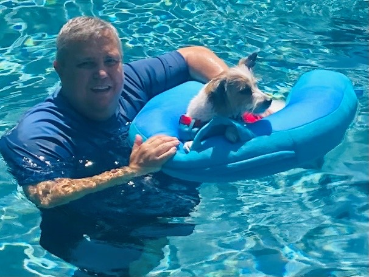
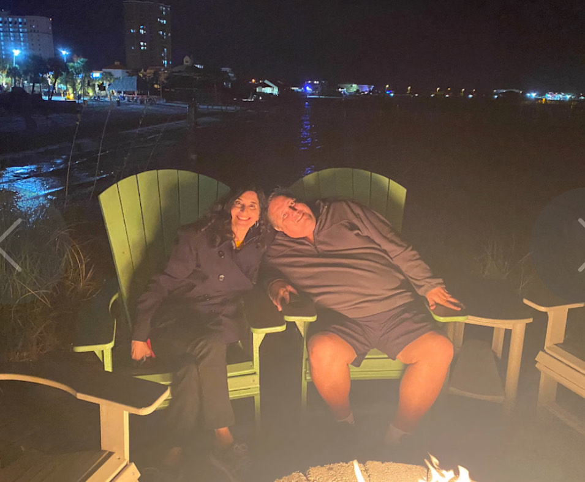
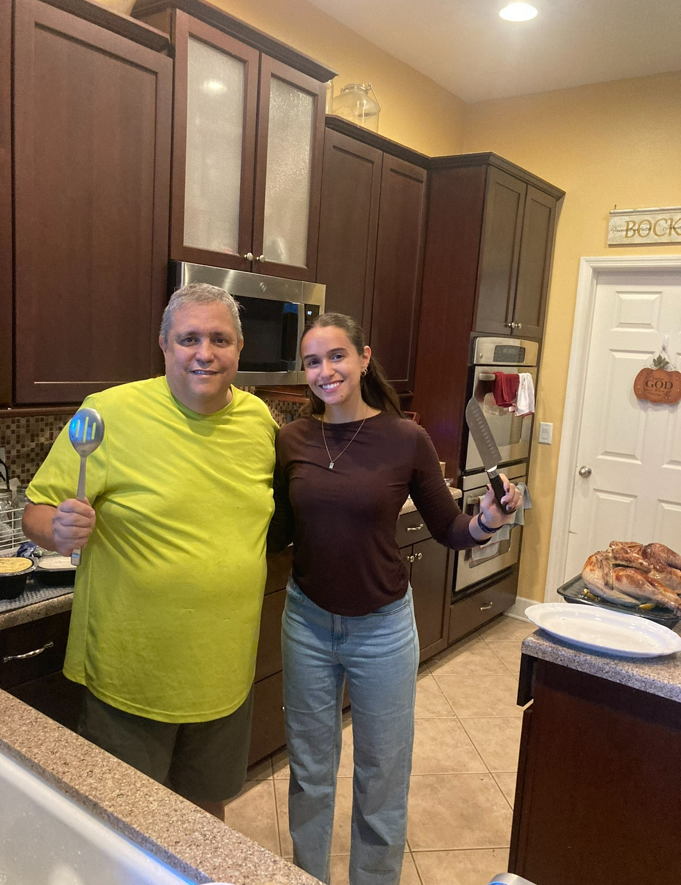
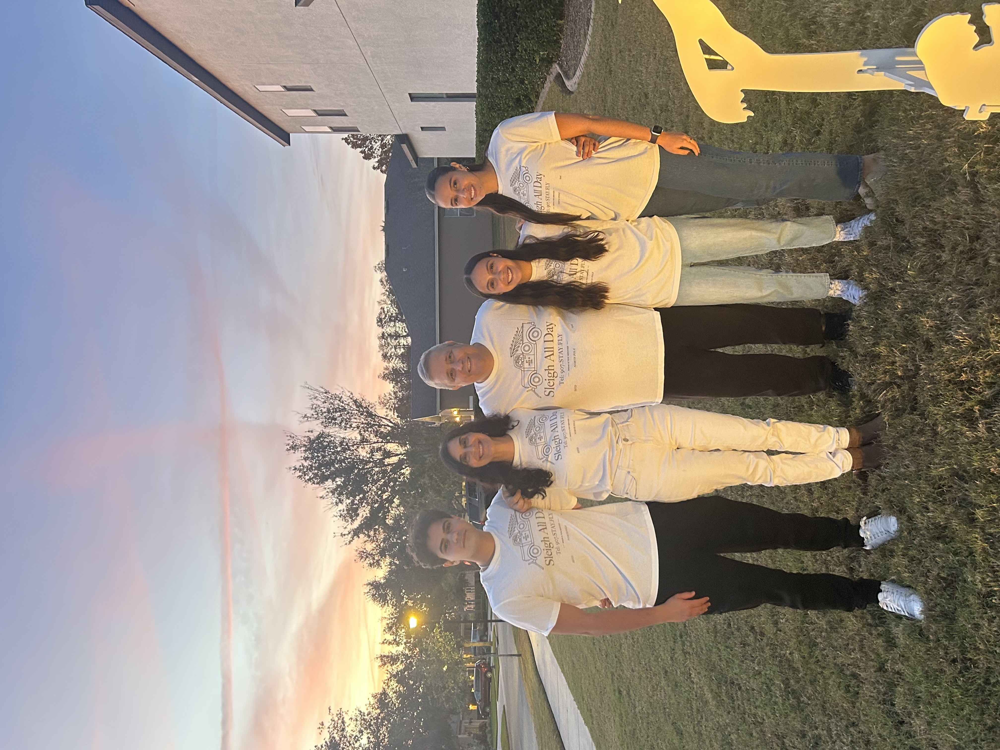
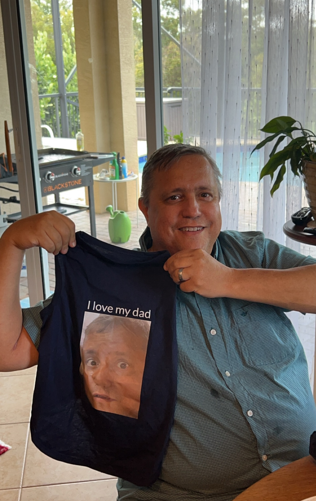
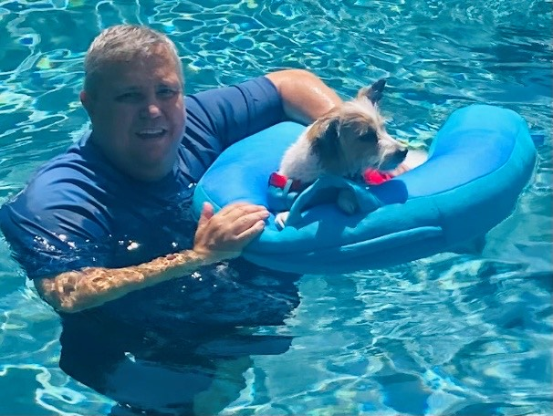
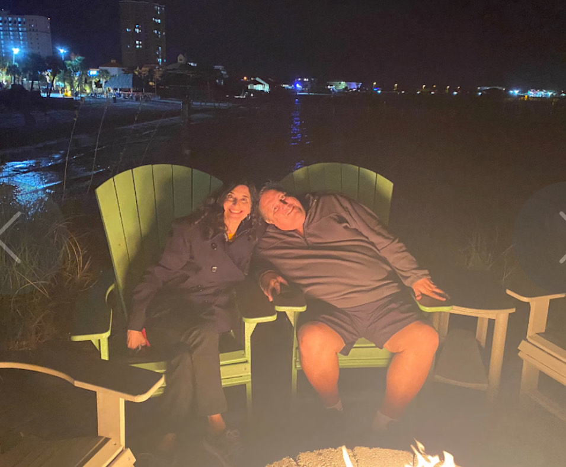
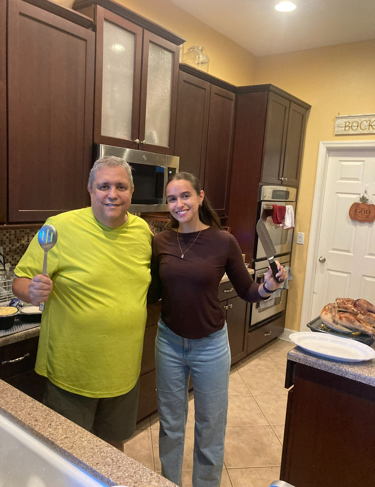
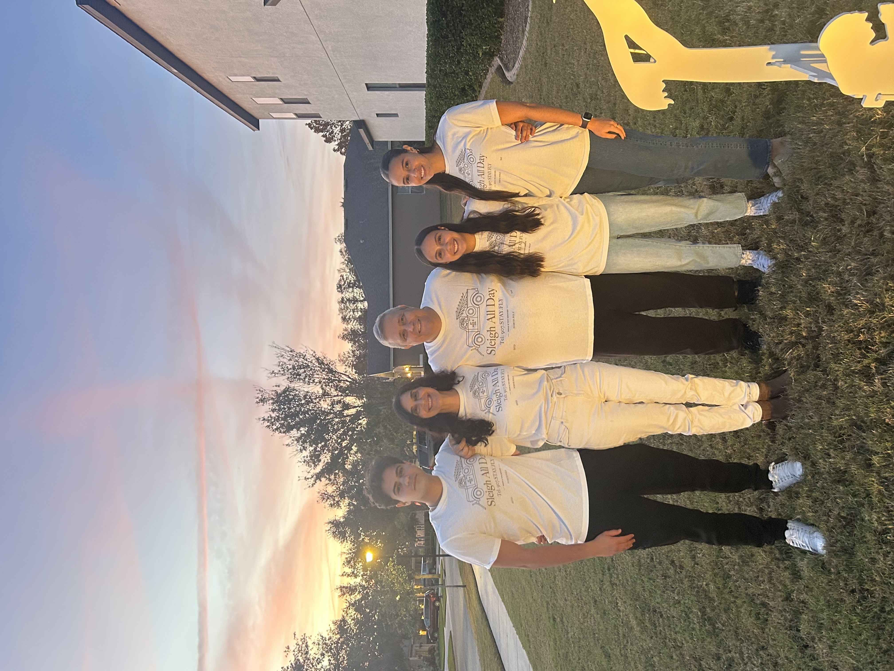
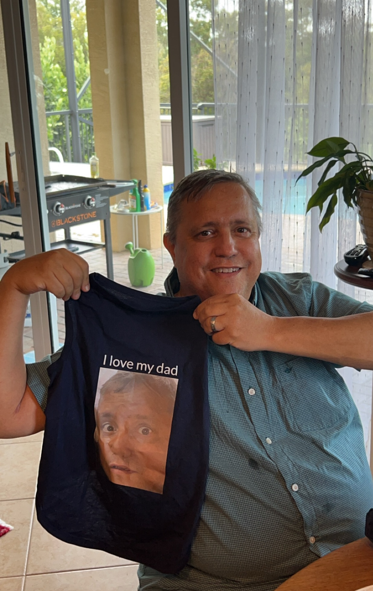

Jay is a devoted husband and loving father of four children and our loyal dog Teddy. This past year has been incredibly tough for our family. Jay was diagnosed with stage 5 kidney disease, meaning kidney failure, and since September, he’s been on dialysis. Jay and Lauren have been trained to administer Jay’s hemodialysis at home 5 days each week. It’s been a difficult and emotional journey for all of us, as dialysis isn’t a long-term solution, and it’s taking a toll on his health and well-being. Now, he urgently needs a kidney transplant, and we’re looking for a living donor to help give him a chance at a better life. Through all of this, our faith in God has been our rock, and we trust that He has a plan for our family, even in the midst of this struggle. We're holding on to hope that we’ll find someone who can help and make a huge difference for Jay’s future.
“Ah Lord GOD! Behold, thou hast made the heaven and the earth by thy great power and stretched out arm, and there is nothing too hard for thee:” Jeremiah 32:17.
Would you please join us in praying for God to provide Jay with a miraculous, living kidney? Would you also consider praying for Jay and passing this along to your friends? Thank you!
“But thanks be to God, which giveth us the victory through our LORD Jesus Christ” 1 Corinthians 15:57.